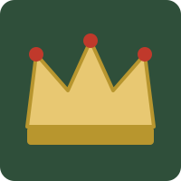
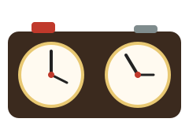

На этой странице
Происхождение шахмат

Предком шахмат считается индийская игра чатуранга, появившаяся примерно в VI веке. Из Индии игра попала в Персию, где получила название «шатрандж», а затем вместе с арабами распространилась по Ближнему Востоку и Европе.
Современные правила сложились в Европе в конце XV века: ферзь и слон стали дальнобойными фигурами, и игра стала намного быстрее и острее. В XIX веке начались международные турниры, а в 1886 году прошёл первый официальный матч за звание чемпиона мира.
Главные этапы
- VI век — чатуранга в Индии.
- VII–X века — шатрандж в Персии и арабском мире.
- Конец XV века — современные ходы ферзя и слона.
- 1886 год — первый матч за звание чемпиона мира.
- 1924 год — основана Международная шахматная федерация FIDE.
- 1997 год — компьютер Deep Blue выиграл матч у чемпиона мира Гарри Каспарова.
Шахматные часы

В турнирных партиях время каждого игрока ограничено. Для этого используют шахматные часы с двумя циферблатами: сделав ход, игрок нажимает кнопку, его часы останавливаются, а часы соперника начинают идти.
По времени партии делятся на классические (несколько часов), быстрые (рапид) и блиц, где на всю партию у игрока всего несколько минут.
Чемпионы мира
Неоспоримые чемпионы мира по шахматам среди мужчин:
| № | Чемпион | Страна | Годы |
|---|---|---|---|
| 1 | Вильгельм Стейниц | Австро-Венгрия / США | 1886–1894 |
| 2 | Эмануэль Ласкер | Германия | 1894–1921 |
| 3 | Хосе Рауль Капабланка | Куба | 1921–1927 |
| 4 | Александр Алехин | Франция | 1927–1935, 1937–1946 |
| 5 | Макс Эйве | Нидерланды | 1935–1937 |
| 6 | Михаил Ботвинник | СССР | 1948–1957, 1958–1960, 1961–1963 |
| 7 | Василий Смыслов | СССР | 1957–1958 |
| 8 | Михаил Таль | СССР | 1960–1961 |
| 9 | Тигран Петросян | СССР | 1963–1969 |
| 10 | Борис Спасский | СССР | 1969–1972 |
| 11 | Роберт Фишер | США | 1972–1975 |
| 12 | Анатолий Карпов | СССР | 1975–1985 |
| 13 | Гарри Каспаров | СССР / Россия | 1985–1993 |
| 14 | Владимир Крамник | Россия | 2006–2007 |
| 15 | Вишванатан Ананд | Индия | 2007–2013 |
| 16 | Магнус Карлсен | Норвегия | 2013–2023 |
| 17 | Дин Лижэнь | Китай | 2023–2024 |
| 18 | Гукеш Доммараджу | Индия | 2024 — н. в. |
С 1993 по 2006 год титул был разделён между версиями FIDE и ПША, поэтому годы Каспарова и Крамника указаны только за периоды неоспоримого чемпионства.